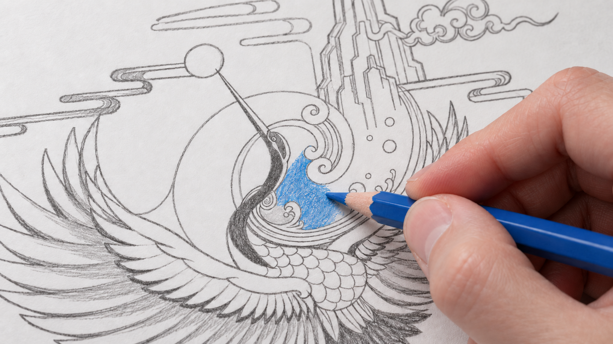
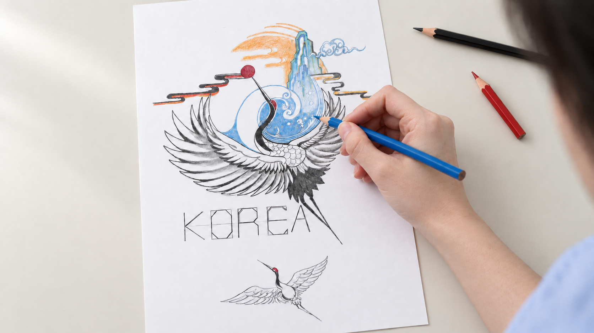

S01 · V9 실제 입력 원본인물 클로즈업장면 프롬프트 · 영상 미생성Locked-off intimate portrait. Preserve this exact face, head angle and expression. Her eyes stay on the same point high to the right throughout. Her lips retain the same quiet, subtle smile and her head remains still. Only almost imperceptible natural breathing and tiny eyelid movement. Constant soft daylight from the upper right, stable skin texture and eye focus, unchanged background. A calm confident moment. No dialogue.
S02 · V9 실제 입력 원본앞치마 뒤 매듭장면 프롬프트 · 영상 미생성Continuous locked-off close-up from behind. The woman already holds the two loops of her tied apron bow. After a brief still moment, both hands make one short, firm outward tug of only a few centimetres. The central knot tightens securely and the fabric tension increases naturally. The bow remains tied with the same two loops and two short hanging tails. Her hands settle and hold. Her torso remains steady. One confident controlled movement at natural speed. Constant soft daylight, stable focus, realistic fingers and fabric. No dialogue.
S03 · V9 실제 입력 원본연필 첫 선장면 프롬프트 · 영상 미생성Static macro camera on the graphite pencil tip already touching the feather outline. The supported hand slowly traces a single very short section of the existing curved contour, moving only a few millimetres, then holds still. A thin graphite line darkens directly under the tip only. Paper and all other outlines remain perfectly stationary and unchanged. Natural real-time movement, realistic hand anatomy, constant light and locked focus on the contact point. No dialogue.
S04 · 손 수정첫 파란색장면 프롬프트 · 영상 미생성Locked macro shot. The blue colored pencil is already contacting the small blue water patch. With a supported wrist the hand makes two tiny deliberate shading strokes inside that same blue patch, then rests. The blue pigment becomes slightly denser only immediately underneath the blue tip. The surrounding graphite drawing stays uncolored and unchanged. Paper remains flat and still. Fixed camera, focus and light, realistic natural speed. No dialogue.
S05 · 손 수정 · 왼손 제거부분 채색장면 프롬프트 · 영상 미생성Locked-off shot preserving the input composition. The blue colored pencil tip is already touching the existing blue water area. The right hand makes two small, deliberate shading strokes within the same tiny blue region, then pauses. The wrist remains supported and nearly still. Blue pigment deepens only directly beneath the contacting blue tip. The paper, artwork geometry and KOREA lettering stay unchanged. Only the right drawing hand is visible; the left hand stays outside the frame. Constant soft daylight, fixed focus on the pencil contact point, realistic natural real-time motion. No dialogue.
S06 · V9 실제 입력 원본완성작장면 프롬프트 · 영상 미생성A quiet overhead artwork presentation. The single completed sheet remains centered and perfectly flat on the smooth ivory surface. Camera is locked directly above, parallel to the paper. Preserve every crane feather, the KOREA lettering, all colors and the exact sheet proportions. Maintain constant soft daylight and precise paper texture throughout the shot. The entire artwork remains still and visible with generous empty space around it. No people, hands or tools enter. No dialogue.